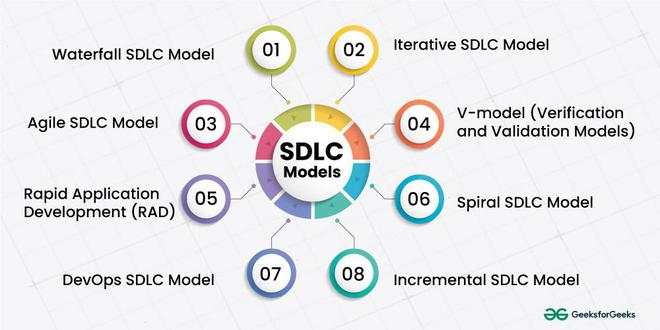

2.15 Database Application System Life Cycle
The Database Application System Life Cycle focuses on systems where a database is the central component. Phases emphasise data modelling, schema design, normalisation, query optimisation, and data integrity alongside application logic.

DB application phases
- Planning. The team defines scope, identifies data sources and users, and confirms feasibility.
- Requirements collection and analysis. Analysts document data needs, transactions, reports, and constraints.
- Conceptual data modelling. A high-level entity–relationship diagram defines entities, relationships, and attributes.
- Logical database design. The schema is normalised (for example to third normal form), and integrity rules are defined.
- Physical database design. The team chooses storage structures, indexes, partitioning, and performance tuning options.
- Application development. Developers implement SQL, stored procedures, the application layer, and APIs.
- Testing. Testers verify data integrity, run load tests, and confirm backup and recovery procedures.
- Deployment and migration. Legacy data is loaded, the system is cut over, and parallel running may be used to reduce risk.
- Maintenance. The team manages schema evolution, performance monitoring, and security patches over the life of the database.
DB-specific concerns
- Data integrity. Primary keys, foreign keys, constraints, and triggers keep data consistent and valid.
- Concurrency. Locking and transaction isolation allow many users to access the database safely at the same time.
- Backup and recovery. Disaster recovery plans and replication protect against data loss.
- Scalability. Indexing strategies and sharding help the database grow as data volume increases.
Exam question — DB Application Life Cycle
Q: Explain the Database Application System Life Cycle. What phases are specific to database development?
Model answer points:
- Define the Database Application System Life Cycle as an SDLC variant in which the database is the central architectural component.
- Highlight database-specific phases: conceptual modelling with an ERD, logical design with normalisation, and physical design with indexes and storage tuning.
- Also mention data migration, integrity testing, backup and recovery, and concurrency control.
- Explain how this differs from generic SDLC through deeper data modelling and long-term schema maintenance.